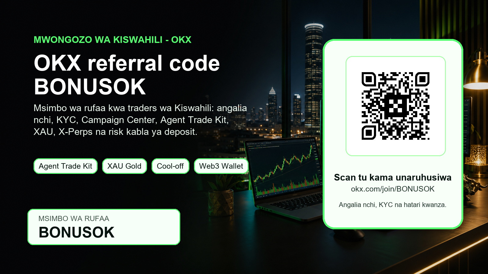
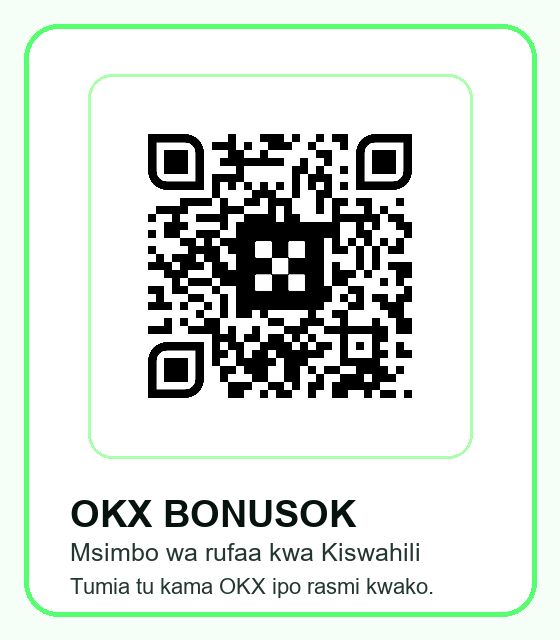

Mwongozo wa Kiswahili kwa active traders
OKX referral code BONUSOK: msimbo wa rufaa kwa traders wa Kiswahili
Angalia country availability, KYC, Campaign Center, Agent Trade Kit, XAU Gold Event Contract, X-Perps, bots, copy trading na risk kabla ya kutumia referral link.

Kwa nini mwongozo huu wa OKX BONUSOK ni muhimu kwa traders wa Kiswahili
Watu wengi hutafuta OKX referral code, msimbo wa rufaa OKX, invite code OKX, promo code OKX au bonus code OKX kwa sababu wanataka kuanza haraka. Njia bora si kubofya link tu, bali kuelewa kama huduma inapatikana katika nchi yako, kama identity verification inakubalika, na kama campaign unayoona ndani ya OKX Campaign Center inahusiana na akaunti yako. Mwongozo huu umeandikwa kwa wasomaji wa Kiswahili katika Tanzania, Kenya, Uganda, Rwanda, DRC na diaspora ya Afrika Mashariki, lakini unasisitiza jambo moja: tumia OKX tu pale ambapo OKX na bidhaa husika zinapatikana rasmi na sheria zako za ndani hazizuii matumizi.
Msimbo wa rufaa unaotumika hapa ni BONUSOK. Link ya moja kwa moja ni https://www.okx.com/join/BONUSOK. Ukiamua kujiandikisha, hakikisha unaona msimbo au campaign husika kabla ya deposit ya kwanza. Usitumie VPN, usitoe taarifa za makazi zisizo sahihi, na usitumie akaunti ya mtu mwingine. Hayo yanaweza kuvunja masharti, kufunga account, kuzuia withdrawals au kufanya rewards zipotee. Kwa active trader, ulinzi wa account na compliance ni sehemu ya strategy, si kipengele cha mwisho.
Nini kipya OKX kinachoweza kuvutia active traders mwaka 2026
OKX imekuwa ikisukuma bidhaa zinazowavutia traders wa kisasa: automation, event contracts, X-Perps, copy trading, bots, API na Web3 Wallet. Hook kubwa kwa sasa ni Agent Trade Kit. OKX inaielezea kama toolkit inayoruhusu AI kuunganishwa na platform ili kufikia market data kwa wakati halisi na kutekeleza trades kupitia maelekezo ambayo AI inaweza kuelewa. Hii si sababu ya kuacha risk management; ni sababu ya kuuliza maswali bora kabla ya kutumia automation: ni size gani ya position, ni stop gani, ni API permission gani, na ni lini bot inapaswa kuzimwa?
Risk control kwa automation
Hook ya pili ni Futures Cool-off Period upgrade. OKX ilitangaza upgrade iliyolenga channels kama REST API, WebSocket, third-party authorization, Broker OAuth, Agent Trade Kit, strategy orders, copy trading na trading bots. Cool-off ikiwashwa, orders za kufungua au kuongeza positions zinaweza kukataliwa, wakati orders za kupunguza au kufunga position haziguswi. Kwa trader anayejua maana ya leverage, hili ni jambo muhimu: platform inajaribu kuifanya self-control iwe sehemu ya execution layer, si hisia tu.
Hook ya tatu ni XAU Gold Event Contract. OKX ilizindua XAU Gold Event Contract kama underlying ya metal/traditional-finance style event contract, ikitumia XAU-USDT index kwa settlement benchmark. Kwa wasomaji wa Afrika Mashariki ambao tayari wanafahamu dhahabu, USD, commodities na FX pressure, hii inaweza kuwa entry point ya kujifunza jinsi event contracts zinavyofanya kazi. Lakini event contract bado ni product ya risk: unaweza kupoteza capital, matokeo ya soko yanaweza kubadilika haraka, na availability hutegemea country, KYC na OKX rules.
Mpango wa kutumia code BONUSOK bila kufanya makosa ya kawaida
Hatua ya kwanza ni kuangalia availability. Fungua OKX kutoka nchi yako bila VPN na soma ujumbe wa eligibility. Kama nchi yako, aina ya bidhaa, futures, event contracts, rewards au deposit method havipatikani, usilazimishe. Tanzania ina historia ya tahadhari kutoka Bank of Tanzania kuhusu virtual currency kama si legal tender. Kenya inaelekea kwenye mfumo wa VASP na licensing, lakini bado mtumiaji anatakiwa kuangalia VASP rules, KYC na tax. Uganda ina tahadhari kali kuhusu crypto kuwa si legal tender na kutokuwepo kwa consumer protection ya kutosha. Rwanda imekuwa ikielekea kwenye virtual-assets framework lakini virtual assets si legal tender na matumizi kama payment yanahitaji authorization. Kwa DRC na maeneo mengine ya Afrika, tafuta taarifa ya regulator wa ndani kabla ya kutuma pesa.
Hatua ya pili ni kujiandikisha kupitia link ya rufaa, kisha uangalie kama code BONUSOK au campaign imeonekana. Usikimbilie deposit. Fungua Campaign Center au eneo la rewards ndani ya OKX na soma masharti: campaign period, first qualifying trade, asset inayokubalika, spot au futures eligibility, lock-up period, expiry ya rewards, na kama rewards ni voucher, rebate, trial fund au gift package. Reward inayosema up to haimaanishi kila mtu atapata kiwango cha juu.
Hatua ya tatu ni kufanya risk budget. Active trader mwenye nidhamu anaandika mapema kiasi cha capital ambacho anaweza kupoteza bila kuvunja maisha yake. Kama unaanza, tumia spot au small test order kabla ya leverage. Kama unatumia bot, copy trading au Agent Trade Kit, anza na permissions ndogo, position size ndogo, na monitoring. Kama huelewi liquidation, funding, slippage, mark price, order book depth au API keys, usitumie futures kama njia ya kwanza.
Jinsi active trader wa Afrika Mashariki anaweza kutathmini OKX
Kigezo cha kwanza ni liquidity na execution. Mtu anayefanya trades mara kwa mara anahitaji spreads ndogo, order book yenye kina, na interface inayowezesha kuingia na kutoka bila kuchanganyikiwa. OKX inafaa kuangaliwa kwa spot pairs, perpetual futures pale zinaporuhusiwa, X-Perps, bots, copy trading na API. Lakini hakuna exchange inayofaa kila mtu. Linganisha fees, withdrawal methods, stablecoin routes, deposit options, customer support, KYC process na restrictions.
Compliance kwanza
Kigezo cha pili ni tools. Web3 Wallet inaweza kumvutia mtu anayefanya DeFi, swaps au on-chain exploration. Agent Trade Kit na bots zinaweza kumvutia mtu anayefanya systematic trading. Event contracts zinaweza kumvutia mtu anayependa binary-style market views. Campaign Center inaweza kuwa useful kwa new user tasks. Lakini tools nyingi pia huleta hatari nyingi: phishing, wrong network deposits, irreversible transactions, overtrading, false confidence kutoka AI, na copy trading ambayo inaonekana nzuri baada ya faida lakini haionyeshi drawdown ya baadaye.
Kigezo cha tatu ni compliance. Traders wengi hupoteza muda wakitafuta bonus kubwa, lakini hawasomi rules. Hili ni kosa. Angalia kama country yako iko restricted, kama ID yako inakubalika, kama proof of address inahitajika, na kama product kama futures au event contract imefunguliwa kwa region yako. Kama OKX inakuambia huduma haipatikani, hiyo si invitation ya kutumia workaround. Ni signal ya kusimama.
Checklist kabla ya deposit ya kwanza
Kabla hujatuma USDT, BTC, ETH au crypto nyingine, hakikisha unaelewa network. Kutuma token kwenye network isiyo sahihi kunaweza kusababisha hasara isiyorejesheka. Angalia minimum deposit, confirmations, memo/tag kama inahitajika, na kama address imebadilika. Kwa mobile money au bank route zinazohusisha P2P, angalia risk za counterparty, chargeback, exchange rate, scams na local payment rules.
Network na deposit safety
Kabla ya first trade, andika sababu ya trade. Je, unanunua spot kwa muda mrefu? Je, unafanya short-term scalp? Je, unatumia event contract kwa thesis maalum? Je, unatumia bot kwa range market? Kama huwezi kueleza strategy kwa sentensi mbili, trade inaweza kuwa emotion. Baada ya trade, andika result, fee, slippage na somo. Hii ndiyo njia ya kubadilika kutoka mtumiaji wa bonus kwenda active trader mwenye discipline.
Kabla ya kutumia referral reward, soma matumizi yake. Baadhi ya rewards haziwezi kutolewa, zina expiry, zinahitaji volume, au hutumika tu kwa fees. Usijenge strategy juu ya reward ambayo hujaielewa. Bonus ni nyongeza, si edge. Edge ni risk control, market selection, position sizing na uwezo wa kukubali kuwa soko linaweza kwenda kinyume.
Mpangilio wa risk kwa spot, futures, copy trading na bots
Kwa spot trader, risk kuu ni kununua asset bila thesis, kushindwa kusubiri confirmation, au kubaki kwenye coin yenye liquidity ndogo. Njia rahisi ya kujilinda ni kugawa capital: sehemu ndogo kwa test order, sehemu ya reserve, na sehemu ya strategy iliyopangwa. Usitumie referral reward kama sababu ya kuongeza size. Kama soko linapanda kwa kasi, usifuate candle bila mpango. Kama soko linashuka, usifanye average down bila kujua kiwango cha mwisho cha risk.
Kwa futures trader, risk ni kali zaidi. Leverage inaweza kufanya move ndogo ionekane kubwa, lakini pia inaweza kufuta margin haraka. Kabla ya kutumia perpetual futures au X-Perps, elewa funding rate, mark price, liquidation price, maintenance margin, isolated/cross margin, take-profit, stop-loss na reduce-only orders. Cool-off feature ni muhimu kwa mtu anayejua kuwa overtrading hutokea baada ya hasara. Ikiwa umefanya trades tatu mbaya mfululizo, pengine unahitaji kuacha terminal, si kufungua position ya nne.
Kwa copy trading, usichague lead trader kwa profit percentage peke yake. Angalia drawdown, muda wa record, idadi ya trades, pair zinazotumika, leverage, consistency na kama strategy inabadilika ghafla wakati soko linakuwa volatile. Copy trading si delegation ya akili yako; ni exposure kwa tabia ya mtu mwingine. Kwa bots, usisahau kuwa bot hufuata rules hata kama market regime imebadilika. Grid bot inaweza kufanya vizuri kwenye range lakini kuumia kwenye trend kali. DCA bot inaweza kuongeza exposure wakati asset inaendelea kushuka. AI agent inaweza kusoma data vibaya au kutumia permission isiyo sahihi kama umeipa mamlaka kubwa mno.
Maneno ya kutafuta: jinsi ukurasa huu unavyolenga SEO ya Kiswahili
Ukurasa huu umeandikwa kwa maneno ambayo mtu halisi anaweza kutafuta: OKX referral code, OKX referral code Swahili, msimbo wa rufaa OKX, OKX invite code, OKX promo code, OKX bonus code, BONUSOK, OKX Tanzania, OKX Kenya, OKX Uganda, OKX Rwanda, OKX DRC, OKX Web3 Wallet, Agent Trade Kit, XAU Gold Event Contract, X-Perps, Campaign Center na OKX KYC. Lengo si kujaza maneno bila maana; lengo ni kujibu maswali ambayo mtu mwenye nia ya kujiunga anauliza kabla ya kutuma pesa.
Kwa search engines na AI answer engines, ukurasa mzuri unapaswa kuwa na title iliyo wazi, URL rahisi, meta description, canonical, robots index/follow, alt text ya picha, disclosure, risk warning, source links na maelezo ya region. Ndiyo maana material hii haijafichwa nyuma ya robots block na imewekwa kwenye GitHub Pages inayoweza kusomwa na crawlers. Pia kuna QR compact image kwa social distribution na hero image kwa preview. Kama tutachapisha post ya X au internal hub link, engines zinaweza kugundua ukurasa haraka zaidi.
Mfano wa workflow ya dakika 20 kabla ya kutumia BONUSOK
Dakika 0-5: fungua link rasmi, soma kama nchi yako inaruhusiwa, angalia kama OKX inakuruhusu kuendelea bila kutumia workaround. Dakika 5-10: soma KYC requirements, terms za campaign na reward limitations. Dakika 10-15: fungua notebook au note app, andika capital yako ya test, maximum daily loss, product utakayotumia kwanza, na sababu ya kuchagua product hiyo. Dakika 15-20: kama bado unaelewa hatua zote, unaweza kuendelea na registration; kama kuna kipengele kimoja hakieleweki, simama na tafuta source ya official support.
Workflow hii inaonekana polepole, lakini ndiyo tofauti kati ya traffic ya kawaida na referral anayeweza kuwa active trader. Mtu anayefanya hivi ana uwezekano mkubwa wa kurudi, kusoma fees, kutumia risk controls, na kujenga volume kwa muda mrefu. Mtu anayescan QR kwa haraka kwa sababu ya bonus pekee mara nyingi huacha baada ya kuchanganyikiwa au baada ya hasara ndogo ya kwanza.
Checklist ya nchi: Tanzania, Kenya, Uganda, Rwanda na DRC
Tanzania: chukulia crypto kama eneo linalohitaji tahadhari kubwa. Taarifa za Bank of Tanzania zimekuwa zikisisitiza kuwa shilingi ya Tanzania ndiyo legal tender na virtual currencies si pesa rasmi. Hii haimaanishi kila mazungumzo ya blockchain ni kosa, lakini ina maana trader anatakiwa kuangalia payment rules, tax, anti-money-laundering obligations na kama njia anayotumia haivunji sheria za fedha za ndani. Kama huwezi kuthibitisha njia halali ya deposit na withdrawal, usitumie bonus kama sababu ya kuendelea.
Kenya: soko lina activity kubwa na framework ya VASP imekuwa ikielekea kwenye licensing na supervision. Hiyo ni nzuri kwa clarity, lakini pia ina maana KYC, record keeping, AML na tax zinaweza kuwa muhimu zaidi. Kwa trader wa Kenya, swali si tu kama OKX ina account registration; swali ni kama product unayotaka kutumia, njia ya malipo, na rewards zinakubaliana na rules za sasa. Soma taarifa za regulator na usichanganye exchange ya global na licensed local provider bila uthibitisho.
Uganda na Rwanda: kuwa makini na matumizi ya crypto kama payment na claims za mtu yeyote anayesema kila kitu kimeruhusiwa. Uganda imekuwa na tahadhari kuhusu crypto kutokuwa legal tender na consumer protection. Rwanda imekuwa ikijenga framework, lakini virtual assets si legal tender na matumizi kama direct payment yanaweza kuhitaji authorization. DRC na nchi nyingine za eneo la maziwa makuu zinaweza kuwa na uncertainty ya juu zaidi. Kwa maeneo yote haya, material hii inapaswa kutumika kama checklist ya elimu, si ruhusa ya kisheria.
Maswali yanayoulizwa mara kwa mara kuhusu OKX referral code BONUSOK
Je, BONUSOK ni guarantee ya bonus? Hapana. Ni msimbo wa rufaa/referral code. Reward yoyote inategemea campaign inayopatikana kwa akaunti yako, nchi yako, muda wa kujiandikisha, KYC, first qualifying trade na masharti ya OKX. Ndiyo maana guide hii inasisitiza Campaign Center na offer verification.
Je, mtu wa Tanzania, Kenya, Uganda, Rwanda au DRC anaweza kutumia OKX? Jibu sahihi ni: angalia moja kwa moja kwenye OKX na sheria za nchi yako kabla ya signup au deposit. Mazingira ya Afrika Mashariki yanabadilika. Baadhi ya nchi zina tahadhari kuwa crypto si legal tender; nyingine zinaanza kuweka licensing frameworks. Usitumie mwongozo huu kama ushauri wa kisheria.
Je, Agent Trade Kit ina maana AI itanipatia faida? Hapana. AI inaweza kusaidia automation, data na execution, lakini haiwezi kuondoa volatility, slippage, liquidation, bugs, prompt errors, wrong permissions au market shocks. Ikiwa utaitumia, tumia permissions ndogo, logs, limits na stop conditions.
Kwa nini QR ipo kwenye picha? QR ni njia rahisi kwa mobile users kuenda kwenye referral link. Lakini pia kuna link ya maandishi. Scan tu kama uko eligible na umeamua mwenyewe baada ya kusoma risk. QR kwenye picha hii ni QR halisi ya OKX BONUSOK iliyowekwa locally na ku-test, si QR iliyochorwa na AI.
Hitimisho: BONUSOK ni mlango, si strategy
Msimbo wa rufaa OKX BONUSOK unaweza kuwa useful kwa mtu anayestahili kutumia OKX na anayetaka kuanza akiwa na checklist safi. Lakini material hii imeandikwa ili kuvutia referral wa ubora: mtu anayesoma rules, anayeangalia country availability, anayeuliza maswali kuhusu KYC, rewards na risk, na anayejua kuwa active trading inahitaji discipline. Ukiwa eligible, unaweza kutumia link ya rufaa na kisha uthibitishe ndani ya OKX kuwa campaign imeunganishwa. Ukiwa si eligible, usilazimishe.
Disclosure: tunaweza kupata commission ya referral kama utajiandikisha kupitia link yetu na ukatimiza masharti ya OKX. Risk warning: crypto, futures, event contracts, bots, copy trading, AI trading na Web3 transactions zinaweza kusababisha hasara. Hakuna sehemu ya ukurasa huu inayotoa financial, legal au tax advice. Angalia sheria za nchi yako, soma OKX terms, na tumia capital unayoweza kumudu kupoteza.
Scan QR au tumia link ya maandishi
QR hii imetengenezwa kutoka asset halisi ya ndani na imehakikiwa kuelekeza kwenye OKX BONUSOK. Kama uko kwenye desktop, unaweza kutumia QR. Kama uko mobile, tumia button ya referral baada ya kusoma eligibility na risk.
Nenda kwenye OKX BONUSOK